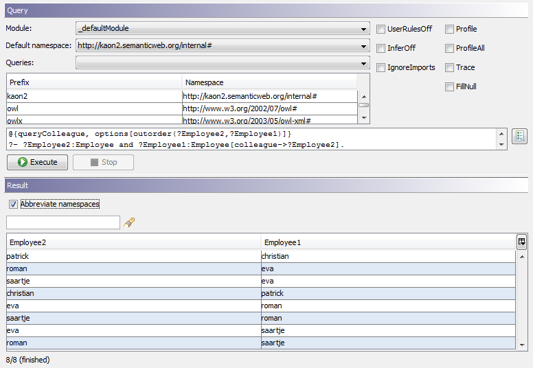
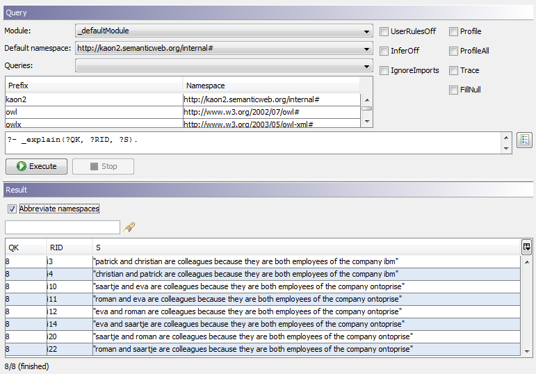

|

|
|
Explanations |
|
|
|
|
Explanations |
A feature of OntoBroker is to explain the reason why a query returns specific results. This chapter shows how to enable the explanation feature in OntoBroker and give an example of how to formulate so-called explanation rules.
Basics
Retrieving explanations is done in two steps
| • | First execute the query with the "explain" query option |
| • | Then execute another query to retrieve the explanations for the first query |
If an explanation for a generated answer is requested, it is necessary that each relevant rule of the ontology is accompanied by an explanation rule. These rules contain text blocks to explain the meaning in common language, including place holders for the concrete instantiations of the rule variables.
Example
We have a ObjectLogic ontology describing people and the company they work in:
// Concept hierarchy ------------------------------------
Company[].
Employee[].
// Schema -----------------------------------------------
Employee[colleague {0:*} *=> Employee].
Employee[company {0:*} *=> Company].
// Instances --------------------------------------------
christian:Employee.
eva:Employee.
ibm:Company.
ontoprise:Company.
patrick:Employee.
roman:Employee.
saartje:Employee.
// Properties -------------------------------------------
christian[company->ibm].
eva[company->ontoprise].
patrick[company->ibm].
roman[company->ontoprise].
saartje[company->ontoprise].
Additionally we have a rule that states that if two employees work at the same company they are colleagues:
@{ruleColleague}
?A[colleague->?D] :- ?A:Employee AND ?A[company->?F] AND ?D:Employee AND ?D[company->?F] AND ?F:Company AND NOT _unify(?A,?D).
You can pose the following query to ask for people and their colleagues:
@{queryColleague, options[outorder(?Employee2,?Employee1)]}
?- ?Employee2:Employee and ?Employee1:Employee[colleague->?Employee2].
This will return the following results:

Now you might want to explain why two people (represented by the variables denoted by $A$ and $D$) are colleagues.
$A$ and $D$ are colleagues because they are both employees of the company $F$
This would be expressed in the ObjectLogic rule
@{ruleColleague_EXPLANATION}
_explain(?QK,?I,?S) :-
(?I:<obl:default:Instantiation>[<obl:default:ruleid> -> ruleColleague],
?I[<obl:default:variables> -> <obl:default:i>(<obl:default:A>,?var_A)],
?I[<obl:default:variables> -> <obl:default:i>(<obl:default:D>,?var_D)],
?I[<obl:default:variables> -> <obl:default:i>(<obl:default:F>,?var_F)],
_applyStringTemplate("$A$ and $D$ are colleagues because they are both employees of the company $F$",[], [<obl:default:A>(?var_A),<obl:default:D>(?var_D),<obl:default:F>(?var_F)],?S))@$prooftreefacts(?QK).
Note that OntoBroker allows explanation rules to be generated automatically, so you do not have to write this rule manually (see below for details). Querying for all employees and their colleagues would be done in the following way:
?- ?Employee2:Employee and ?Employee1:Employee[colleague->?Employee2].
If result explanations are required, this is done using an additional annotation:
@{options[explain]} ?- ?Employee2:Employee and ?Employee1:Employee[colleague->?Employee2].
This will bring the same results as before but will internally create a new module for the query session. The module contains the information needed to create the explanations. They can be queried in the following way:
?- _explain(?QK, ?RID, ?S).
Where:
| • | ?QK: is a variable representing the query session |
| • | ?RID: is the result id |
| • | ?S: is the textual representation of the explanation |
This will actually bring the result:

for this ontology.
Generating Explanation Rules
OntoBroker provides a built-in for automatically generating explanation templates. Assume you want to generate an explanation rule for the following rule:
@{R1}
?-
aPerson1[hatKind->aPerson3]
:-
aPerson1:Person AND
aPerson2:"Person AND
aPerson3:"Person AND
aPerson1[hasChildWith(aPerson2)->aPerson3].
First of all you can use the built-in _generateExplanationTemplate/4 to generate the default explanation template:
?- _generateExplanationTemplate("m1","R1","",?OUT).
Generated template
'$aPerson1$ hatKind $aPerson3$
BECAUSE
$aPerson1$ is a Person AND
$aPerson2$ is a Person AND
$aPerson3$ is a Person AND
$aPerson1$ ns_(#,hasChildWith($aPerson2$)) $aPerson3$'
Typically you will edit this template to abstract from the rule details and focus on the statement of the rule. With the final template you can then use the built-in _generateExplanationRuleText/4 to generate the rule text of the explanation rule:
?- _generateExplanationRuleText("m1","r1","""$aPerson1$ hatKind $aPerson3$
BECAUSE
$aPerson1$ is a Person AND
$aPerson2$ is a Person AND
$aPerson3$ is a Person AND
$aPerson1$ ns_(#,hasChildWith($aPerson2$)) $aPerson3$""",?OUT).
Generated explanation rule
explain_(QK,I,S) <-
I:Instantiation[ruleid->R1]@prooftreefacts_(QK)
AND I[variables->i(aPerson1,var_aPerson1)]@prooftreefacts_(QK)
AND I[variables->i(aPerson3,var_aPerson3)]@prooftreefacts_(QK)
AND I[variables->i(aPerson2,var_aPerson2)]@prooftreefacts_(QK)
AND _applyStringTemplate(\'$aPerson1$ hatKind $aPerson3$
BECAUSE
$aPerson1$ is a Person AND
$aPerson2$ is a Person AND
$aPerson3$ is a Person AND
$aPerson1$ ns_(#,hasChildWith($aPerson2$))
$aPerson3$\',[],[aPerson1(var_aPerson1),aPerson3(var_aPerson3),aPerson2(var_aPerson
2)],S)@prooftreefacts_(QK).'
NOTE:
| • | Querykey: As the OntoBroker runs as a server there may be several queries at a time. To be able to identify the requested explanation, each query is uniquely identified by a key. This key allows the explanation for the query to be accessed. The querykey is accessible via the API of the QueryClient (please see the JavaDocs for further informations). |
| • | Caching: When the explanation feature is used, each executed query generates explanation information stored at the server. To prevent the system running out of memory it is necessary to remove the generated explanation using the removeExplanation command. This command takes the querykey as an argument and will tell the server to clean up all information related to the explanation of this concrete query. |
| • | Explanations: OntoStudio provides an graphical user interface for dealing with explanations. |